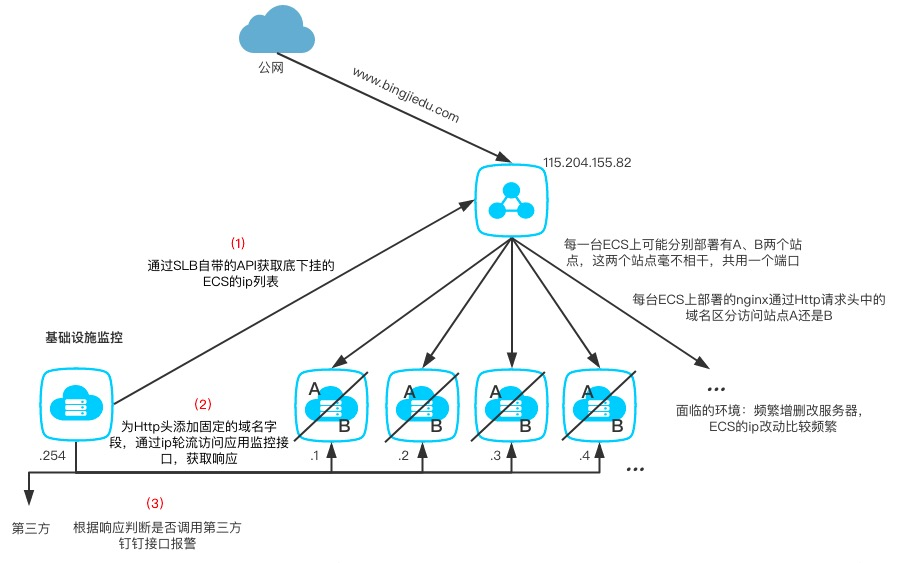

这是本人第一次接到运维方的需求，说是需要做一个系统来监控SLB底下挂的ECS集群中某些接口的健康状态，并附上了长长的接口清单。
当时由于这个需求是间接传达到我手里的，我便直接按照他说的去阿里云开发者手册中寻找是否有获取到底下挂的ECS的ip列表的方法，准备中规中矩地通过遍历ip列表、发送Http请求、获取响应解析、钉钉报警的方式来实现这个监控。
在翻阅阿里云开发者手册时，我偶然发现它有一个自带的健康检查的功能。虽然这个功能仅仅针对某一台ECS，并不能精确到某一个接口（因为存在，ECS是好的但接口功能却挂掉的情况），无法满足需求。但凭借这一点，我却不能不相信阿里云会没有提供精确到某一个接口的监控服务，于是我找到我身边的运维小伙伴。
需求并不是出自这位小伙伴。但当我把我所知道的需求一五一十地告诉他时，他强烈表示，阿里云自带的云监控系统完全满足这个需求，甚至就是为了解决这个需求而诞生的，他们早就在用这个云监控了。
早就在用？
当我再次想到这个需求是出自运维方时，我渐渐意识到事情远没有那么简单。我便找到了需求方，希望得知云监控不适用的原因，即导致这个项目需求诞生的导火线。
由于我没有运维方查看云监控的权限，这里我画一张简单的架构图，用文字简单描述一下他们“早就在用的云监控”。

如图，一台SLB暴露在公网，底下挂着若干的ECS都部署在内网中。
阿里云向我们提供这样一种云监控服务：我们可以通过直接在阿里云平台上配置每次监控请求间隔的时间，以及希望监控的ip+监控接口的路径，这样就可以实现每隔固定时间SLB就会向底下的ECS发送探测请求。还可以对请求的响应时间、响应值配置一个阈值，当响应时间或是响应值超过阈值大小时，可以触发它的报警服务。简直就是马杀鸡一条龙。
遗憾的是这并不适用于我们的某些业务。
举个例子，当某个ECS集群中的每台服务器上部署了两个站点时，这种监控就会行不通。
一般一台部署多个站点的服务器，上面都会通过nginx、IIS、tomcat等这服务来实现针对多域名多站点的支持。当在正常情况下，一个外部的请求进来时，它会通过这个请求头中携带的域名信息来区分进入哪一个站点。也就是说，只有通过域名才能访问这样的服务器，云监控中的监控ip配置在这里不可行。
除此之外，我们还考虑到，基于现有的云监控方案只能监控到事先配置好ip的那些ECS，在服务器有大变动的前提下，每次变动都需要修改监控的配置，十分麻烦。
综上，可以总结出这个监控系统项目诞生的背景：
1、应用的访问对域名的依赖
2、ECS云服务器极大的变动可能性
这也是云监控目前不能满足的两种场景。
对于上述第一条，在阿里云平台上可能可以这样解决：给SLB底下每台ECS绑一个域名，然后通过另一种名为“可用性检测”的方式去探测（这种方式似乎可以配置域名），打印日志，再通过日志对响应进行分析，报警。
然而这种方案对第二条矛盾完全奈何不了，因为这种监控也是需要实现配置好的，是静态的。
要想获取到实时动态的ECS列表，从ECS出发是不可行的。
于是我们决定从SLB入手，每次通过SLB自带的接口获取到底下挂的服务器列表的信息。这样获取到的服务器列表便是动态的，实时的。缺点是，我们得通过一个程序定时去调用它。
这也意味着我们的探测源从阿里云的SLB变成了我们的监控应用。为了使我们的监控应用能够直接访问目的ECS，这个监控应用得部署在与这些ECS同一内网下。
这样解决了第二条矛盾，剩下的就是如何解决第一条了。
通过SLB自带的接口获取到的服务器列表里只有ip信息，但这个域名是我们已知的信息，是固定不变的。所以现在问题变成了“如何让我们的监控系统通过域名遍历ECS列表”，鉴于现有的情报，我们有两种方案。
方案一、每次访问一台ECS前，都修改一次本地hosts文件，使域名映射要访问的目的ip，实现直接访问。
方案二、由于nginx、IIS、tomcat等这类服务是通过Http请求头中的域名信息来区分站点，我们可以通过在每个Http请求头中加入域名信息，然后通过ip去访问，这样也能访问到响应的应用。
就方案一而言，我们先不说这个方案技术性有多差。在我们想要并发地发送这些请求时，保证线程安全就成了需要去攻克的一个点。很明显在方案二可行的情况下，方案一是必然不会被考虑使用的。（其实我们是先想到的方案一，经过对站点区分过程的研究后才发现可以有方案二这样简单的方案）
以下便是我们的最终敲定的方案

其实在考虑能否使用阿里云自带的监控实现这个需求时还出现了许多的小问题，它们一次又一次试图打消我们想直接拿现有的监控偷懒的念头。不过由于我们脸皮够厚，都扛过来了。
在这个过程中，为了搞清楚需求诞生的原因，我找了许多运维小伙伴沟通。有意思的是，每当与一个新的小伙伴聊时，他们总有新的现成的方案，并表示我说的需求可以满足。
我想这里并不是需求沟通出了问题。从一开始师傅把项目丢给我时，他告诉我的需求就是正确的。就是需要一个监控应用，对SLB底下的所有ECS进行监控。问题在于我们没有搞清楚需求产生的原因，用我喜欢的话来说，就是“导致这个需求产生的导火线”。在我们没有搞清楚这一点之前，盲目地只顾需求的解决方案，反而会迷失方向。因为这根“导火线”，很有可能就是在这个需求中你需要去攻克的最大的难题。